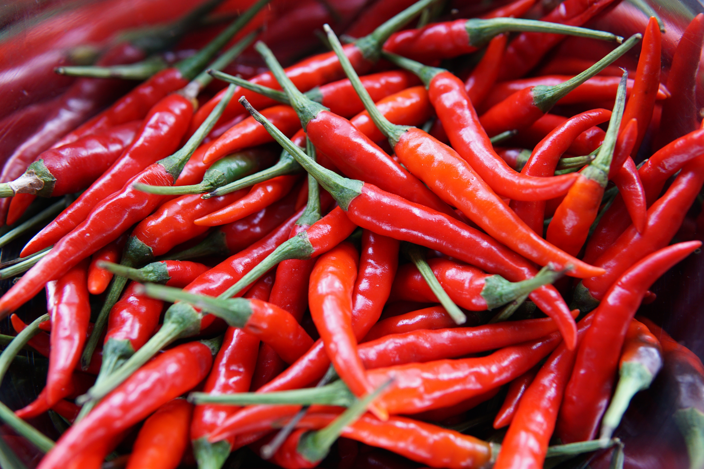

About Pepper
Pepper, also known as bell pepper or sweet pepper, is a popular vegetable with a mild and sweet flavor. It comes in various colors, including red, yellow, and green. Peppers are rich in vitamins and antioxidants, making them a healthy addition to meals. Growing peppers at home is a rewarding experience, and with the right care, you can enjoy a bountiful harvest.
Steps to Grow Pepper
- Choose a sunny location with well-drained soil for planting peppers.
- Start pepper seeds indoors 8-10 weeks before the last expected frost date.
- Transplant seedlings outdoors after the danger of frost has passed.
- Space pepper plants about 18-24 inches apart in rows.
- Water peppers consistently, keeping the soil evenly moist but not waterlogged.
- Fertilize with a balanced fertilizer to promote healthy growth and fruit development.
- Harvest peppers when they reach the desired size and color. Use sharp scissors or pruning shears to avoid damaging the plant.
Extra Information
Peppers are a versatile vegetable used in salads, stir-fries, and various culinary dishes. They are an excellent source of vitamin C and add vibrant colors to your garden and meals. Peppers come in different varieties, including sweet bell peppers and hot chili peppers. Experiment with different pepper types to suit your taste preferences.